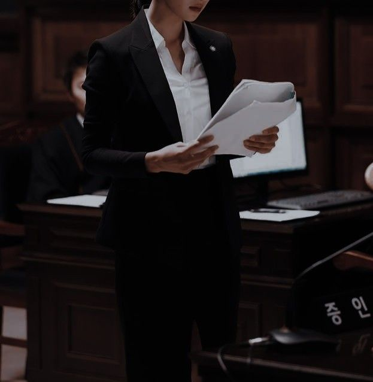
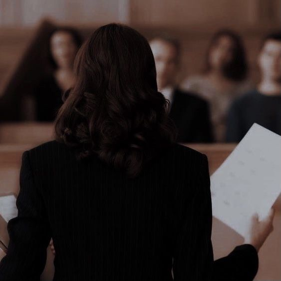

Çështjet më të fundit
Dhelpra, Dec 7, 2022
Karl Arnold Sr., i njohur gjithashtu si The Fox, ishte një vrasës serial që kishte në shënjestër familjet. Ai u kap nga FBI pasi vrau 8 familje. Paditësi në këtë çështje ishte një nga avokatët më të mirë, Calista Reid, dhe arriti të dënojë i pandehuri gjashtë burgim të përjetshëm. Me këtë tha, komuniteti ynë është pak më i sigurt
Çështjet më të fundit
Carl Buford, Dec 22, 2022
Carl Buford është një ngacmues fëmijësh,pedofil dhe vrasës serial.Pretendohej të ishte një hero i komunitetit, por në vend të kësaj ai ishte personi më i tmerrshëm atje. Ai ngacmoi më shumë se 55 djalë të ri dhe vrau 3. Më në fund pasi u kap, ai u ndoq penalisht në gjykatë dhe falë Alana Spiro, CEO & Themeluese e Alana Enterprise, ai u dënua me burgim të përjetshëm plus 15 vjet.